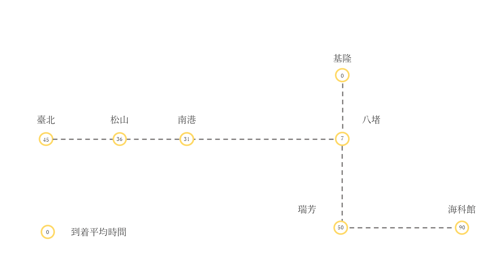

交通案内
電車でお越しの方

高速バスでお越しの方
車でお越しの方
| 国道1号→ 基隆端インターチェンジで降りる |
|---|
周辺の駐車場
| 駐車場名 | 収容台数 | 地図 |
|---|---|---|
| 基隆港西3駐車場 | 484台 (障害者専用スペース：10 妊婦と幼児優先スペース：10) | |
| 基隆南站駐車場 | 77台 (障害者専用スペース：3 妊婦と幼児優先スペース：2) | |
| 富士捷基隆車站(南)駐車場 | 119台 (障害者専用スペース：3 妊婦と幼児優先スペース：3) | |
| 信二駐車場 | 512台 (障害者専用スペース：16 妊婦と幼児優先スペース：10) | |
| 基隆皇冠大樓停車場 | 153台 (障害者専用スペース：4 妊婦と幼児優先スペース：4) | |
| 基隆港東3~東4駐車場 (東岸郵輪旅客大樓) | 54台 (障害者専用スペース：4) | |
| 博愛地下駐車場 | 253台 (障害者専用スペース：6 妊婦と幼児優先スペース：6) | |
| 東岸地下駐車場 | 666台 (障害者専用スペース：15 妊婦と幼児優先スペース：13) |